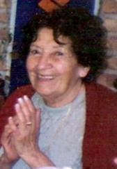
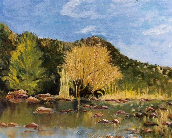
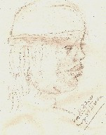
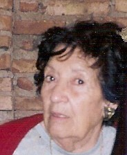
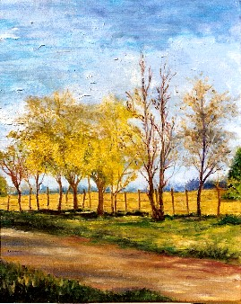

La búsqueda del equilibrio...
Marta Zabala de Rosso---------------
A punto de inaugurar sus primeros 82 años,
esta pintora nos habla no sólo de su afición por el arte,
sino también, de su vida, historia y anhelos.
Se puede vislumbrar paso a paso, a través de su existencia, la búsqueda
de equilibrio
como guía. Es lo que la mantiene, activa y dinámica; pero firme
en las convicciones que la han traído hasta aquí.
Y tal vez sean ellas, su mayor premio.
En un mundo cambiante, saturado por intereses materialistas
y de competencia, encontrar alguien
que pudo, con los pies firmes en tierra, volar en sus ideales y sentirse satisfecho,
no es fácil.
Nacida en Bell Ville (Provincia de Córdoba-Argentina),
un 19 de enero, creció en un hogar
tradicional constreñido a las férreas costumbres de principios
del siglo pasado, marcadas por la cultura
cristiana católica romana, en sus convicciones más estrechas.
Hace varias décadas, prefirió vivir en Unquillo, de la misma provincia,
para continuar su existencia.
Su deleite hacia los niños la llevaron a seguir
la profesión docente, Contando con 29 años, conoció a quien fuera
su esposo durante 20.
|
 |
 |
De su matrimonio, nacieron otros dos hijos, de quienes
cuenta hoy con cinco nietos y dos biznietos. "Cuando pinto un cuadro me olvido de todo... Me pueden
estar hablando y no me inmuto... Me gusta |
"Me gusta la poesía
y la historia, ésta tanto patriótica como política.
Actualmente estoy leyendo una obra de -Claudio Fantini-, escritor que
me agrada sobremanera. Me transporto al lugar del relato, curiosa de conocer los personajes y las situaciones que se describen, de acuerdo a una época. Con la imaginación me siento en ese lugar... me encanta viajar. A los lugares donde voy, por ejemplo, llevo lápiz y papel y trato de esbozar algún personaje representativo. Me hubiera gustado poder plasmar en el lienzo a los seres que quiero." |
 |
 |
El mayor desafío por el que Marta pasó, fue su viudez. Para referirse a ella, alude a la conocida canción titulada "Resistiré". Se siente identificada con ella y enfatiza que por más golpes que uno reciba, por más tropiezos, es necesario tener valor para seguir adelante. Recuerda igualmente las dos operaciones graves de corazón a la que ha sido sometida, de las cuales pensaba que entraba para no salir; pero, debido a una misión que aún está cumpliendo, sigue adelante, hasta que ella termine: "Porque me gusta la vida..." (Manifiesta con una gran sonrisa) "Todavía estoy enamorada de mi esposo. No volvería a formar pareja, pues siempre estaría la presencia de él; le habría hecho sombra" |
"En la actualidad en todo lo que se ve, se trasmite
pasión, |
 |
Aferrada a valores como la rectitud, la honestidad
y la moral así como el cumplimento de las reglas, se nos
muestra alguien que no está conforme con la incertidumbre ni con los
"por si acaso", conque preferimos vivir
hoy en día.
El "aquí nos salvamos; sólo si nos salvamos todos...",
muestra el mayor arrojo de sus convicciones.
La persona y la artista, conjugadas en un personaje, jamás aburrido, al que deberíamos imitar.
"Jugada" con sus principios, tiene el
mayor galardón en la libertad de significar
cuánto siente, sin torpezas.